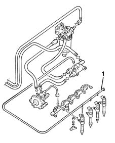
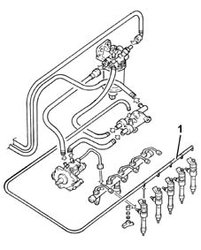

1060D Check high pressure fuel circuit
- Path
- Test > 10 ENGINE > 1060 DIESEL FUEL INJECTION > 1060D Check high pressure fuel circuit
- Kind
- test / check procedure
- Applies to
- engines: 1.9 JTD 8V, 1.9 JTD 16V; all production periods
- Interactive page
- https://sloeber94.github.io/elrnDB-a147/en/#/3026054
Applies to: engines: 1.9 JTD 8V; all production periods
Disconnect the electrical connections from all the fuel injectors.
Disconnect the fuel recirculation pipes from all the fuel injectors.
Connect the Examiner diagnostic equipment.
Display the 'measure diesel pressure and engine rpm' parameters on the parameters screen of the Control Unit Tests.
Turn the ignition key to the start (AVV) position for 5 seconds and check that the fuel pressure is over 300 bar with engine speed above 200 rpm.

Applies to: engines: 1.9 JTD 16V; all production periods
Disconnect the electrical connections from all the fuel injectors.
1. Disconnect the fuel recirculation pipes from all the fuel injectors.
Connect the Examiner diagnostic equipment.
Display the 'measure diesel pressure and engine rpm' parameters on the parameters screen of the Control Unit Tests.
Turn the ignition key to the start (AVV) position for 5 seconds and check that the fuel pressure is over 300 bar with engine speed above 200 rpm.
